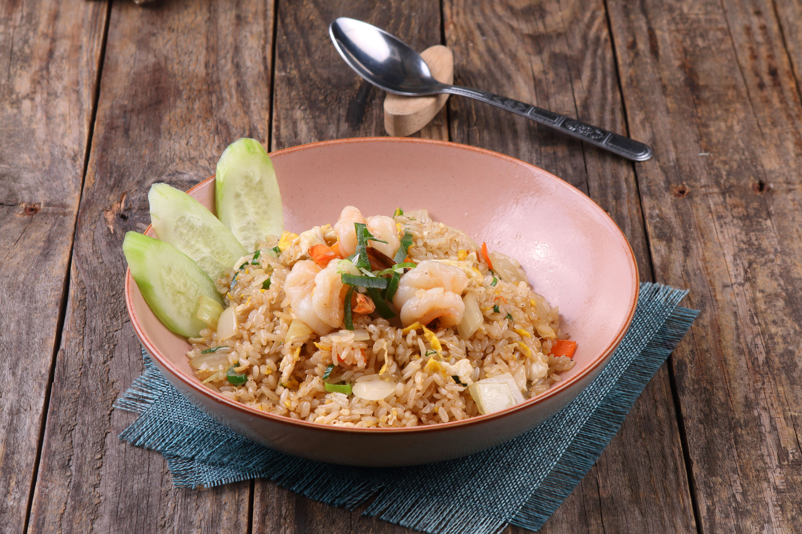

Fried Rice

An Image of a Cooked Fried Rice. I love Fried Rice, it's my favourite food and can be cooked in different ways.
I want to prepare what we call a Nigerian Fried Rice.
Ingredients
- Groundnut Oil
- Onions
- Bell Peppers
- Carrots
- Green Peas
- Srimps
- Chicken
- Salts
- Spices
- Uncooked Rice
- Ginger
- Garlic
- Curry
- Spring Onions
Steps to prepare this
- Step 1: Perboil the Rice, wash and set aside
- Step 2: Slice the Spring Onion, Carrorts, Green Peas, and set them aside.
- Step 3: Wash, cook and fry the chicken. Set the water from the cooked chicken aside.
- Step 4: Pour goundnut oil in an empty pot, fry sliced spring onion, bell peppers, Srimps, and carrots with low heat for a few minutes
- Step 5: Cook the perboiled rice with the water from the chicken sauce and curry
- Step 6: Pour the fried mixed spices into the rice and Mix until it's completed.
Home